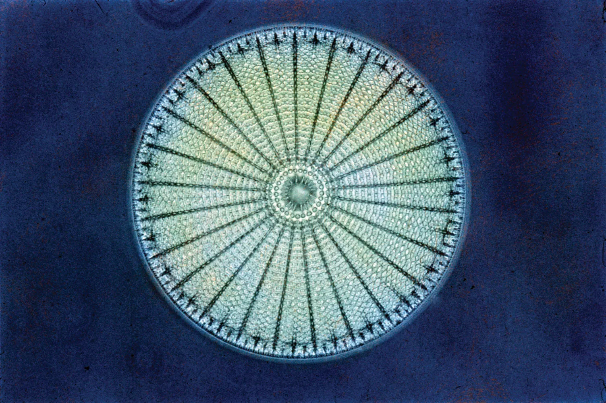
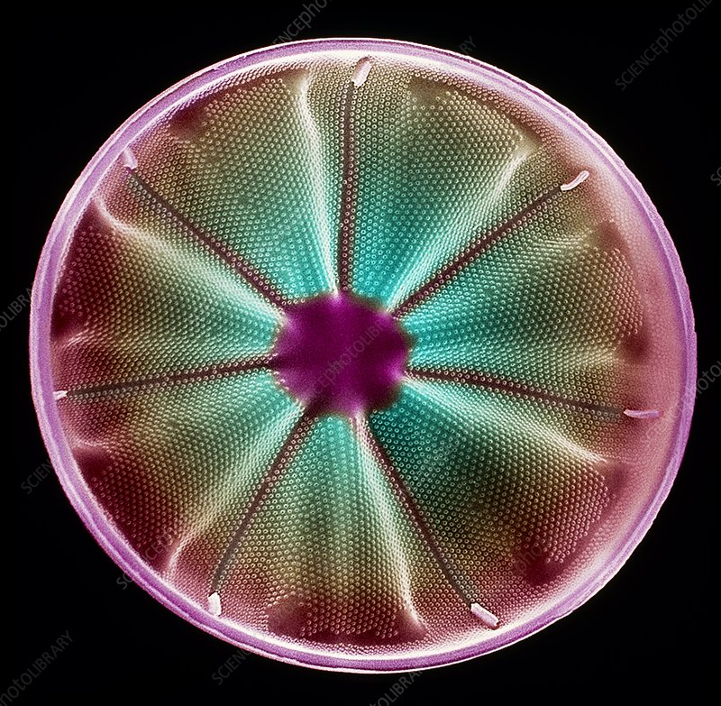
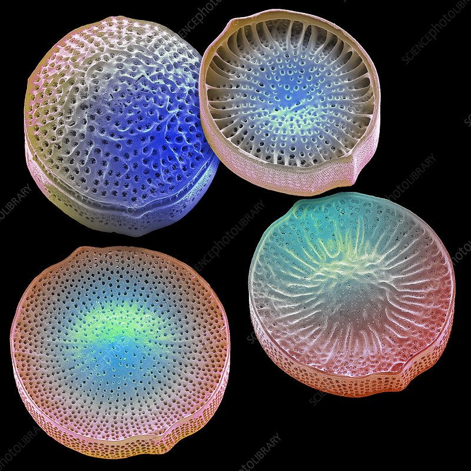

Diatomea, Ernst Haeckel · Kunstformen der Natur, 1904

A cocoon is not a container. It is a transformation in progress.
Eduard has always taken nature as his primary design reference. Not as decoration, but as a structural logic — the way living systems solve problems of form, function, and coexistence at every scale.
The Cocoon mark is inspired by diatoms — microscopic organisms that live at the foundation of Earth's ecosystems. Despite being invisible to the naked eye, diatoms produce roughly a quarter of all the oxygen on the planet. Their glass-like shells are among the most intricate geometric forms in nature: structured, purposeful, extraordinarily beautiful.
They are proof of something Eduard believes deeply: that the smallest, least visible element in a system can be the one everything else depends on.
James Lovelock's Gaia hypothesis describes Earth as a single self-regulating living system — one where every organism, from the diatom to the redwood, plays a necessary role in maintaining the conditions for life. No element is expendable. No participant is merely instrumental.
That is the philosophy behind Cocoon. Every party in the city ecosystem — the property owner, the brand, the creator, the neighborhood — is a dignified node in a network, not a transaction in a chain. When each one is treated that way, the whole system produces something none of them could alone.
After James Lovelock, Gaia: A New Look at Life on Earth